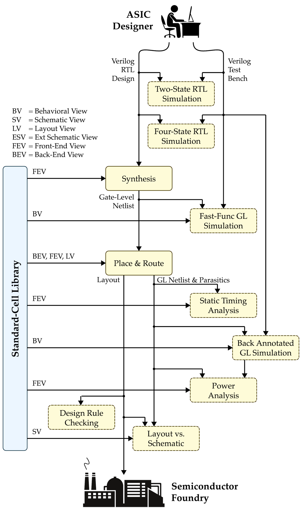
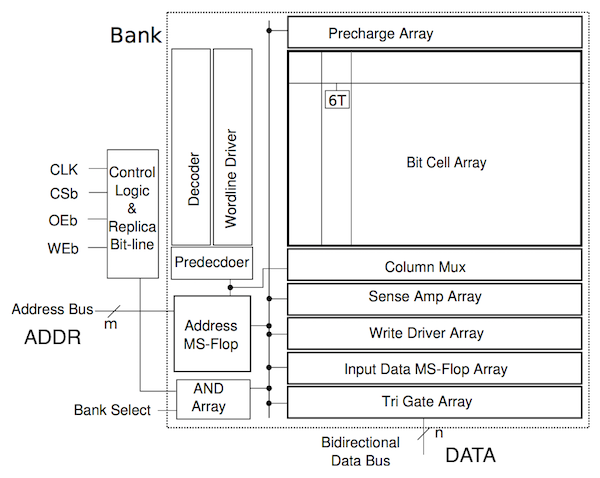
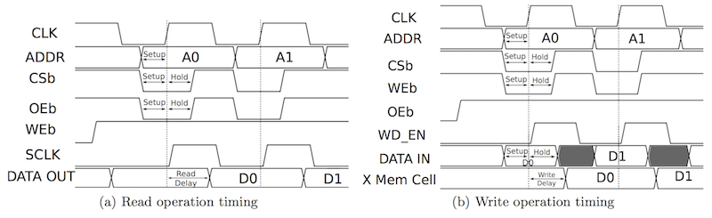
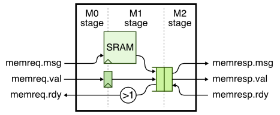

ECE 6745 Lab 8: Commercial Block Flow
In this lab, we will be learning about SRAM generators and how to automate using the ASIC flow, before doing comparative analysis of the GCD accelerator developed in previous labs.
-
SRAM Compilers: Small memories can be easily synthesized using flip-flop or latch standard cells, but synthesizing large memories can significantly impact the area, energy, and timing of the overall design. ASIC designers often use SRAM generators to "generate" arrays of memory bitcells and the corresponding peripheral circuitry (e.g., address decoders, bitline drivers, sense amps) which are combined into what is called an "SRAM macro". These SRAM generators are parameterized to enable generating a wide range of SRAM macros with different numbers of rows, columns, and column muxes, as well as optional support for partial writes, built-in self-test, and error correction. Similar to a standard-cell library, an SRAM generator must generate not just layout but also the six views: behavioral, schematic, layout, extracted schematic, front-end, and back-end. These views can then by used by the ASIC tools to produce a complete design which includes a mix of both standard cells and SRAM macros. We will first see how to use the open-source OpenRAM memory generator to generate various views of an SRAM macro. Then we will see how to use SRAMs in our RTL designs. Finally, we will put the these two pieces together to combine synthesizable RTL with SRAM macros and push the composition through the ASIC toolflow.
-
ASIC Automated Flow: We will also go over the ASIC automated flow. In the previous labs, we manually entered commands for each tool to take a design from RTL to layout. Flow scripts can help automate the process but copying and modifying these flow scripts for every design is tedious and error prone. An agile hardware design flow demands automation to simplify rapidly exploring the area, energy, timing design space of one or more designs. In this section, we will introduce a simple tool called pyhflow which takes as input a step templates and a design YAML and generates appropriate flow scripts.
-
GCD Accelerator: Finally, we will complete a rigorous comparative analysis of the GCD accelerator developed in the previous labs. We will push the GCD accelerator through the flow using pyhflow to analyze its area, energy, and performance in isolation. We will then push two larger designs through the flow using pyhflow: the baseline processor and processor+accelerator composition. We can then compare the area, energy, and performance of the software baseline to the accelerator.
The following diagrams illustrate the primary tools we have already seen in the previous labs. Notice that the ASIC tools all require various views from the standard-cell library. Using the SRAM generator will involve adding an initial step to generate the necessary SRAM views.

Extensive documentation is provided by Synopsys, Cadence, and Siemens for these ASIC tools. We have organized this documentation and made it available to you on the public course webpage:
1. Logging Into ecelinux
Students MUST work in pairs!
You MUST work in pairs for this lab, as having too many instances of
Innovus open at once can cause the ecelinux servers to crash. So
find a partner and work together at a workstation to complete today's
lab.
Follow the same process as previous labs. Find a free workstation and log into the workstation using your NetID and standard NetID password. Then complete the following steps.
- Start VS Code
- Install the Remote-SSH extension, Surfer, Python, and Verilog extensions
- Use View > Command Palette to execute Remote-SSH: Connect Current Window to Host...
- Enter netid@ecelinux-XX.ece.cornell.edu where XX is an ecelinux server number
- Use View > Explorer to open your home directory on ecelinux
- Use View > Terminal to open a terminal on ecelinux
- Start MS Remote Desktop
Now use the following commands to clone the repo we will be using for today's lab.
% source setup-ece6745.sh
% source setup-gui.sh
% mkdir -p ${HOME}/ece6745
% cd ${HOME}/ece6745
% git clone git@github.com:cornell-ece6745/ece6745-lab8 lab8
% cd lab8
% tree
To make it easier to cut-and-paste commands from this handout onto the
command line, you can tell Bash to ignore the % character using the
following command:
2. SRAM Generator Flow
Just as with standard-cell libraries, acquiring real SRAM generators is a complex and potentially expensive process. It requires gaining access to a specific fabrication technology, negotiating with a company which makes the SRAM generator, and usually signing multiple non-disclosure agreements. The OpenRAM memory generator is based on the same "fake" 45nm technology that we are using for the Nangate standard-cell library. We will first be using OpenRAM so we can see how an SRAM generator works and then look at the resulting front- and back-end views. We will then transition to using a commercial SRAM generator with the ASIC flow. Due to licensing issues, we do not have access to the GDS layout view for the commercial SRAMs, but we can still use in them in the ASIC flow and our resulting final GDS will just have an empty hole where the SRAM layout would go.
2.1. OpenRAM SRAM Generator
An SRAM generator takes as input a configuration file which specifies the
various parameters for the desired SRAM macro. Create a configuration
file with the following content using VS Code. You should name your file
SRAM_128x32_1rw_cfg.py and it should be located in the directory shown
below.
The configuration file should look like this:
use_conda = False
num_rw_ports = 1
num_r_ports = 0
num_w_ports = 0
word_size = 32
num_words = 128
num_banks = 1
words_per_row = 4
write_size = 8
tech_name = "freepdk45"
process_corners = ["TT"]
supply_voltages = [1.1]
temperatures = [25]
route_supplies = True
check_lvsdrc = False
output_path = "SRAM_128x32_1rw"
output_name = "SRAM_128x32_1rw"
instance_name = "SRAM_128x32_1rw"
In this example, we are generating a single-ported SRAM which has 128
rows and 32 bits per row for a total capacity of 4096 bits or 512B. This
size is probably near the cross-over point where you might transition
from using synthesized memories to SRAM macros. OpenRAM will take this
configuration file as input and generate many different views of the SRAM
macro including: Verilog behavioral view (.v), SPICE schematic view
(.sp), GDS layout view (.gds), Liberty front-end view (.lib), and a
LEF back-end view (.lef). These views can then be used by the ASIC
tools.
You can use the following command to run the OpenRAM memory generator.
It will take about 4-5 minutes to generate the SRAM macro. You can see the resulting views here:
% cd ${HOME}/ece6745/lab8/asic/playground/openram/SRAM_128x32_1rw
% ls -1
SRAM_128x32_1rw.gds
SRAM_128x32_1rw.lef
SRAM_128x32_1rw.sp
SRAM_128x32_1rw_TT_1p1V_25C.lib
SRAM_128x32_1rw.v
SRAM_128x32_1rw.html
You can find more information about the OpenRAM memory generator on the project's webpage here:
Or in this research paper:
- M. Guthaus et. al, "OpenRAM: An Open-Source Memory Compiler", Int'l Conf. on Computer-Aided Design (ICCAD), Nov. 2016. (https://doi.org/10.1145/2966986.2980098)
The following excerpt from the paper illustrates the microarchitecture used in the single-port SRAM macro.

The functionality of the pins are as follows:
clk: clockWEb: write enable (active low)OEb: output enable (active low)CSb: whole SRAM enable (active low)ADDR: addressDATA: read/write data
Notice that there is a single address, and a single read/write data bus. This SRAM macro has a single read/write port and only supports executing a single transaction at a time. The following excerpt from the paper shows the timing diagram for a read and write transaction.

Prof. Batten will explain this timing diagram in more detail, especially the important distinction between a synchronous read SRAM and a combinational read register file. Take a few minutes to look at the Verilog behavioral view. See if you can see how this models a synchronous read SRAM.
You can take a look at the generated transistor-level netlist for a single bit-cell in the schematic view:
% cd ${HOME}/ece6745/lab8/asic/playground/openram/SRAM_128x32_1rw
% less -p " cell_1rw " SRAM_128x32_1rw.sp
Now let's use Klayout look at the actual layout view produced by the OpenRAM memory generator.
% cd ${HOME}/ece6745/lab8/asic/playground/openram/SRAM_128x32_1rw
% klayout -l ${FREEPDK_45NM}/klayout.lyp SRAM_128x32_1rw.gds
Take a quick look at the .lib file and the .lef file for the SRAM
macro.
% cd ${HOME}/ece6745/lab8/asic/build-sram/00-openram-memgen/SRAM_128x32_1rw
% code SRAM_128x32_1rw_TT_1p1V_25C.lib
% code SRAM_128x32_1rw.lef
2.3. Commercial SRAM Compiler
You can find pregenerated views for various SRAMs here:
Take a look at the Verilog view, front-end view, and back-end view for the commercial SRAM with 128 words and 32 bits/word.
% code ${TSMC_180NM}/srams/SRAM_128x32_1rw.v
% code ${TSMC_180NM}/srams/SRAM_128x32_1rw.lib
% code ${TSMC_180NM}/srams/SRAM_128x32_1rw.lef
These files are similar in spirit to what we saw when using OpenRAM. Now take a look at the PDF databook which is also generated by the commercial SRAM generator.
2.4. SRAM RTL Models
Now that we understand how SRAM generators work, let's see see how to
reference an SRAM in Verilog RTL. Our basic SRAMs are located in the
sim/sram subdirectory.
Take a look the interface of the SRAM in SRAM.v.
module sram_SRAM
#(
parameter p_num_entries = 256,
parameter p_data_nbits = 32,
// Local constants not meant to be set from outside the module
parameter c_addr_nbits = $clog2(p_num_entries),
parameter c_data_nbytes = (p_data_nbits+7)/8 // $ceil(p_data_nbits/8)
)(
input logic clk,
input logic reset,
input logic port0_val,
input logic port0_type,
input logic [c_addr_nbits-1:0] port0_idx,
input logic [(p_data_nbits/8)-1:0] port0_wben,
input logic [p_data_nbits-1:0] port0_wdata,
output logic [p_data_nbits-1:0] port0_rdata
);
The SRAM model is parameterized by the number of words and the bits per word, and has the following pin-level interface:
port0_val: port enableport0_type: transaction type (0 = read, 1 = write)port0_idx: which row to read/writeport0_wben: write byte enablesport0_wdata: write dataport0_rdata: read data
Now look at the implementation of the SRAM. You will see a generate if
statement which uses the parameters to either (1) instantiate a specific
SRAM macro or (2) instantiate a generic SRAM. It is critical that the
name of the specific SRAM macro matches the name generated by SRAM
generator. In this lab, we will be generating an SRAM with 128 words each
of which is 32 bits, and we can see that this SRAM macro is already
included. Take a look at the implementation in SRAM_128x32_1rw.v.
The most important part is these Verilog preprocessor directives.
What this means is that the implementation of this module will be used for RTL simulation but not for synthesis. We don't want to synthesize the SRAM into flip-flops, we want to use the generated SRAM macro.
Let's run the tests for the specific SRAM we will be using in this lab.
% mkdir -p ${HOME}/ece6745/lab8/sim/build
% cd ${HOME}/ece6745/lab8/sim/build
% pytest ../sram/test/SRAM_test.py -k test_direct_128x32 -s
You can run the random test like this:
SRAMs use a latency sensitive interface meaning a user must carefully manage the timing for correct operation (i.e., set the read address and then exactly one cycle later use the read data). In addition, the SRAM cannot be "stalled". To illustrate how to use SRAM macros, we will create a latency insensitive minion wrapper around an SRAM which enables writing and reading the SRAM using our standard memory messages. The following figure illustrates our approach to implementing this wrapper:

Here is a pipeline diagram that illustrates how this works.
cycle : 0 1 2 3 4 5 6 7 8
msg a : M0 Mx
msg b : M0 Mx
msg c : M0 M1 M2 M2 M2
msg d : M0 M1 q q M2 # msg c is in skid buffer
msg e : M0 M0 M0 M0 Mx
cycle M0 M1 [q ] M2
0: a
1: b a a # a flows through bypass queue
2: c b b # b flows through bypass queue
3: d c # M2 is stalled, c will need to go into bypq
4: e d c #
5: e dc # d skids behind c into the bypq
6: e d c # c is dequeued from bypq
7: e d # d is dequeued from bypq
8: e e # e flows through bypass queue
Take a closer look at the SRAM minion wrapper we provide you.
To use an SRAM, simply include sram/SRAM.v, instantiate the SRAM, and
set the number of words and number of bits per word. Here is what the
instantiation of the SRAM looks like in the wrapper.
`include "sram/SRAM.v"
...
sram_SRAM#(128,32) sram
(
.clk (clk),
.reset (reset),
.port0_idx (sram_addr_M0),
.port0_type (sram_wen_M0),
.port0_val (sram_en_M0),
.port0_wben (sram_wben_M0),
.port0_wdata (memreq_msg_data_M0),
.port0_rdata (sram_read_data_M1)
);
We can run a test on the SRAM minion wrapper like this:
Here is what the trace output should look like.
1r > ( (). ) > .
2r > ( (). ) > .
3: > ( (). ) > .
4: wr:00:00000000:0:55fceed9 > (wr(). ) > .
5: wr:01:00000004:0:5bec8a7b > (wr()# ) > #
6: # > (# ()# ) > #
7: # > (# ()wr) > wr:00:0:0:
8: # > (# ()# ) > #
9: # > (# ()# ) > #
10: # > (# ()# ) > #
11: # > (# ()wr) > wr:01:0:0:
12: wr:02:00000008:0:b1aa20f1 > (wr(). ) > .
13: wr:03:0000000c:0:a5b6b6bb > (wr()# ) > #
14: # > (# ()# ) > #
15: # > (# ()wr) > wr:02:0:0:
The first write transaction takes a single cycle to go through the SRAM minion wrapper, but then the response interface is not ready on cycles 5-6. The second write transaction is still accepted by the SRAM minion wrapper and it will end up in the bypass queue, but the later transactions are stalled because the request interface is not ready. No transactions are lost.
2.3. SRAMs w/ ASIC Flow
Let's now push the SRAMMinion through the ASIC flow. First step is to copy the pregenerated commercial SRAMs into our playground.
% cd ${HOME}/ece6745/lab8/asic/playground/sram/00-artisan-sramgen
% cp ${TSMC_180NM}/srams/* .
Now we need to run an interactive simulator to generate the Verilog RTL
design and Verilog testbench.
```bash
% cd ${HOME}/ece6745/lab8/asic/playground/sram/01-pymtl-rtlsim
% ../../../../sim/lab8_sram/sram-sim --impl rtl --input random --translate --dump-vtb
We use Synopsys VCS for four-state RTL simulation.
% cd ${HOME}/ece6745/lab8/asic/playground/sram/02-synopsys-vcs-rtlsim
% vcs -sverilog -xprop=tmerge -override_timescale=1ns/1ps -top Top \
+vcs+dumpvars+waves.vcd -o simv \
+incdir+../01-pymtl-rtlsim \
../01-pymtl-rtlsim/SRAMMinion_noparam__pickled.v \
../01-pymtl-rtlsim/SRAMMinion_noparam_sram-rtl-random_tb.v
% ./simv
Now we are ready for to use Synopsys DC for synthesis. Go ahead and start the Synopsys DC REPL.
Here are the setup commands. The key difference from earlier labs is that now we have to include the front-end views for both the standard cells and the SRAM macros.
dc_shell> set_app_var target_library "$env(TSMC_180NM)/stdcells.db ../00-artisan-sramgen/SRAM_128x32_1rw.db"
dc_shell> set_app_var link_library "* $env(TSMC_180NM)/stdcells.db ../00-artisan-sramgen/SRAM_128x32_1rw.db"
dc_shell> set_app_var report_default_significant_digits 4
Now we can read in the Verilog.
dc_shell> analyze -format sverilog ../01-pymtl-rtlsim/SRAMMinion_noparam__pickled.v
dc_shell> elaborate SRAMMinion_noparam
Remember, because of the ifndef SYNTHESIS Synopsys DC will not read
in the implementation of the SRAM. It will instead realize that there is
no Verilog implementation and then use the corresponding SRAM macro with
the same name.
We use similar constraints to previous labs.
dc_shell> set_max_transition 0.250 SRAMMinion_noparam
dc_shell> set_driving_cell -lib_cell INVD1BWP7T [all_inputs]
dc_shell> set_load 0.005 [all_outputs]
dc_shell> create_clock clk -name clk -period 3.0
dc_shell> set_input_delay -clock clk -max 0.050 [all_inputs -exclude_clock_ports]
dc_shell> set_input_delay -clock clk -min 0.000 [all_inputs -exclude_clock_ports]
dc_shell> set_output_delay -clock clk -max 0.050 [all_outputs]
dc_shell> set_output_delay -clock clk -min 0.000 [all_outputs]
dc_shell> set_max_delay 3.0 -from [all_inputs -exclude_clock_ports] -to [all_outputs]
Let's synthesize the design with optimizations.
And finally we can write out the results.
dc_shell> write -format ddc -hierarchy -output post-synth.ddc
dc_shell> write -format verilog -hierarchy -output post-synth.v
dc_shell> write_sdc post-synth.sdc
dc_shell> report_timing -nets > timing.rpt
dc_shell> report_area -hierarchy > area.rpt
dc_shell> exit
Take a close look at the post-synthesis gate-level netlist.
Notice how there is no implementation of the SRAM! This is because we are not synthesizing the SRAM; we are using the generated SRAM macro.
We can use fast-functional gate-level simulation to make sure the post-synthesis gate-level netlist works.
% cd ${HOME}/ece6745/lab8/asic/playground/sram/04-synopsys-vcs-ffglsim
% vcs -sverilog -xprop=tmerge -override_timescale=1ns/1ps -top Top \
+delay_mode_zero \
+vcs+dumpvars+waves.vcd -o simv \
+incdir+../01-pymtl-rtlsim \
${TSMC_180NM}/stdcells.v \
../00-artisan-sramgen/SRAM_128x32_1rw.v \
../03-synopsys-dc-synth/post-synth.v \
../01-pymtl-rtlsim/SRAMMinion_noparam_sram-rtl-random_tb.v
./simv
Notice how we have to provide the Verilog behavioral view for the standard cells and the Verilog behavioral view from the SRAM generator.
We can now do place-and-route on the design. Create a setup-timing.tcl
file as in previous labs.
The contents should look like this:
create_rc_corner -name typical \
-cap_table "$env(TSMC_180NM)/typical.captable" \
-T 25
create_library_set -name libs_typical \
-timing [list "$env(TSMC_180NM)/stdcells.lib" \
"../00-artisan-sramgen/SRAM_128x32_1rw.lib"]
create_delay_corner -name delay_default \
-library_set libs_typical \
-rc_corner typical
create_constraint_mode -name constraints_default \
-sdc_files [list ../03-synopsys-dc-synth/post-synth.sdc]
create_analysis_view -name analysis_default \
-constraint_mode constraints_default \
-delay_corner delay_default
set_analysis_view \
-setup analysis_default \
-hold analysis_default
The key difference from earlier labs is that now we have to include the front-end views for both the standard cells and the SRAM macros. Go ahead and start the Cadence Innovus REPL.
Here are the commands to setup the design.
innovus> set init_mmmc_file "setup-timing.tcl"
innovus> set init_verilog "../03-synopsys-dc-synth/post-synth.v"
innovus> set init_top_cell "SRAMMinion_noparam"
innovus> set init_lef_file [list \
"$env(TSMC_180NM)/apr-tech.tlef" \
"$env(TSMC_180NM)/stdcells.lef" \
"../00-artisan-sramgen/SRAM_128x32_1rw.lef" \
]
innovus> set init_pwr_net "VDD"
innovus> set init_gnd_net "VSS"
innovus> init_design
innovus> setDesignMode -process 180
innovus> setDelayCalMode -SIAware false
innovus> setOptMode -usefulSkew false
innovus> setOptMode -holdTargetSlack 0.010
innovus> setOptMode -holdFixingCells { BUFFD1BWP7T BUFFD2BWP7T BUFFD4BWP7T }
Again, the key difference from earlier labs is that now we have to include the back-end views for both the standard cells and the SRAM macros. Let's create a floorplan:
Unlike prior labs, here we are using a fixed floorplan. SRAM macros have large fixed shapes and so it can be hard for an automatic floorplan to work.
For placement we start by automatically placing the SRAM macro first.
innovus> addHaloToBlock 4.8 4.8 4.8 4.8 -allMacro
innovus> set_macro_place_constraint -pg_resource_model {METAL1 0.2}
innovus> place_design -concurrent_macros
innovus> refine_macro_place
Then we can go ahead and place the standard cells.
innovus> place_opt_design
innovus> addTieHiLo -cell "TIEHBWP7T TIELBWP7T"
innovus> assignIoPins -pin *
Next is power routing.
innovus> globalNetConnect VDD -type pgpin -pin VDD -all -verbose
innovus> globalNetConnect VSS -type pgpin -pin VSS -all -verbose
innovus> globalNetConnect VDD -type tiehi -pin VDD -all -verbose
innovus> globalNetConnect VSS -type tielo -pin VSS -all -verbose
innovus> addRing \
-nets {VDD VSS} -width 2.6 -spacing 2.5 \
-layer [list top 6 bottom 6 left 5 right 5] \
-extend_corner {tl tr bl br lt lb rt rb}
innovus> addStripe \
-nets {VSS VDD} -layer 6 -direction horizontal \
-width 5.52 -spacing 16.88 \
-set_to_set_distance 44.8 -start_offset 22.4
innovus> addStripe \
-nets {VSS VDD} -layer 5 -direction vertical \
-width 5.52 -spacing 16.88 \
-set_to_set_distance 44.8 -start_offset 22.4
innovus> sroute -nets {VDD VSS}
Then comes clock routing.
innovus> create_ccopt_clock_tree_spec
innovus> set_ccopt_property update_io_latency false
innovus> clock_opt_design
innovus> optDesign -postCTS -setup
innovus> optDesign -postCTS -hold
And finally we do signal routing.
innovus> routeDesign
innovus> optDesign -postRoute -setup
innovus> optDesign -postRoute -hold
innovus> optDesign -postRoute -drv
innovus> extractRC
We can now add filler cells and write the outpus.
innovus> setFillerMode -core {FILL1BWP7T FILL2BWP7T FILL4BWP7T FILL8BWP7T }
innovus> addFiller
innovus> verifyConnectivity
innovus> verify_drc
innovus> saveDesign post-pnr.enc
innovus> saveNetlist post-pnr.v
innovus> rcOut -rc_corner typical -spef post-pnr.spef
innovus> write_sdf -recompute_delay_calc post-pnr.sdf
innovus> write_sdc -strict post-pnr.sdc
innovus> streamOut post-pnr.gds -units 1000 \
-merge "$env(TSMC_180NM)/stdcells.gds" \
-mapFile "$env(TSMC_180NM)/gds_out.map"
innovus> report_timing -late -path_type full_clock -net > timing-setup.rpt
innovus> report_timing -early -path_type full_clock -net > timing-hold.rpt
innovus> report_area > area.rpt
If you take a look at the GDS using klayout you will see there is a whole for SRAM.
% cd ${HOME}/ece6745/lab8/asic/playground/sram/05-cadence-innovus-pnr
% klayout -l ${TSMC_180NM}/klayout.lyp post-pnr.gds
3. Automated ASIC Flow
pyhflow is based on the idea of step templates which are located in the
asic/steps/block directory.
% cd ${HOME}/ece6745/lab8/asic/steps/block
% tree
.
├── 00-artisan-sramgen
│ └── run
├── 01-pymtl-rtlsim
│ └── run
├── 02-synopsys-vcs-rtlsim
│ └── run
├── 03-synopsys-dc-synth
│ ├── dc-warnings.tcl
│ ├── run
│ └── run.tcl
├── 04-synopsys-vcs-ffglsim
│ └── run
├── 05-cadence-innovus-pnr
│ ├── innovus-warnings.tcl
│ ├── run
│ ├── run.tcl
│ └── setup-timing.tcl
├── 06-synopsys-pt-sta
│ ├── run
│ └── run.tcl
├── 07-synopsys-vcs-baglsim
│ ├── calc-clk-ins-src-lat
│ └── run
├── 08-synopsys-pt-pwr
│ ├── run
│ └── run.tcl
├── 09-mentor-calibre-drc
│ ├── run_antenna.rs
│ ├── run_main.rs
│ ├── print-drc-summary
│ ├── run
│ └── run-interactive
├── 10-mentor-calibre-lvs
│ ├── run.rs
│ ├── print-lvs-summary
│ ├── run
│ └── run-interactive
└── 11-summarize-results
├── run
└── summarize-results
Each step is a directory with a run script and possibly other scripts. The key difference from the scripts we used in the previous tutorials, is that these scripts are templated using the Jinja2 templating system:
Open the run.tcl script in the 03-synopsys-dc-synth step template
which uses Synopsys DC for synthesis.
Notice how the run.tcl script is templated based on the design name and
the target clock period.
analyze -format sverilog ../01-pymtl-rtlsim/{{design_name}}__pickled.v
elaborate {{design_name}}
...
create_clock clk -name ideal_clock1 -period {{clock_period}}
The {{ }} directive is the standard syntax for template variable
substitution using Jinja2.
The pyhflow program takes as input a design YAML file which specifies:
- what steps make up the flow
- key/value pairs for variables to substitute into scripts
- 2-state RTL simulation commands
- list of tests
- list of evals
Take a look at the provided design YAML file for the GCD accelerator.
% cd ${HOME}/ece6745/lab8/asic/designs
% code lab8-gcd-xcel.yml
steps:
- block/01-pymtl-rtlsim
- block/02-synopsys-vcs-rtlsim
- block/03-synopsys-dc-synth
- block/04-synopsys-vcs-ffglsim
- block/05-cadence-innovus-pnr
- block/06-synopsys-pt-sta
- block/07-synopsys-vcs-baglsim
- block/08-synopsys-pt-pwr
- block/09-mentor-calibre-drc
- block/10-mentor-calibre-lvs
- block/11-summarize-results
design_name : GcdXcel_noparam
clock_period : 3.0
dump_vcd : false
pymtl_rtlsim: |
pytest ../../../sim/lab5_xcel/test/GcdXcel_test.py \
--test-verilog --dump-vtb | tee -a run.log
../../../sim/lab5_xcel/gcd-xcel-sim --impl rtl --input random \
--stats --translate --dump-vtb | tee -a run.log
../../../sim/lab5_xcel/gcd-xcel-sim --impl rtl --input small \
--stats --translate --dump-vtb | tee -a run.log
../../../sim/lab5_xcel/gcd-xcel-sim --impl rtl --input zeros \
--stats --translate --dump-vtb | tee -a run.log
tests:
- GcdXcel_noparam_test_basic
- GcdXcel_noparam_test_zeros
- GcdXcel_noparam_test_equal
- GcdXcel_noparam_test_divides
- GcdXcel_noparam_test_common_factors
- GcdXcel_noparam_test_coprime
- GcdXcel_noparam_test_powers_of_two
- GcdXcel_noparam_test_larger_numbers
- GcdXcel_noparam_test_swap_ordering
- GcdXcel_noparam_test_fibonacci
- GcdXcel_noparam_test_sub_stress
- GcdXcel_noparam_test_random_0x0
- GcdXcel_noparam_test_random_5x0
- GcdXcel_noparam_test_random_0x5
- GcdXcel_noparam_test_random_3x9
evals:
- GcdXcel_noparam_gcd-xcel-sim-rtl-random
- GcdXcel_noparam_gcd-xcel-sim-rtl-small
- GcdXcel_noparam_gcd-xcel-sim-rtl-zeros
This design YAML file specifies the generated flow should use all eleven
steps. We run PyMTL 2-state RTL sim, VCS 4-state RTL sim, FFGL sim, and
BAGL sim on all tests and evals, but we only do energy analysis on the
evals. The evals usually come from running an interactive simulator like
gcd-xcel-sim. All pyhflow does is use the YAML file to figure out what
to substitute into the templated steps and then copy the run scripts into
the current working directory. You can also override parameters on
pyhflow command line.
3.1. Running ASIC Flow
Let's go ahead and use pyhflow to generate the flow scripts for the GCD accelerator.
% mkdir -p ${HOME}/ece6745/lab8/asic/build-gcd-xcel
% cd ${HOME}/ece6745/lab8/asic/build-gcd-xcel
% pyhflow ../designs/lab8-gcd-xcel.yml
Let's see how the step template has been filled in for the Synopsys DC synthesis step.
% cd ${HOME}/ece6745/lab8/asic/build-gcd-xcel
% code 03-synopsys-dc-synth/run.tcl
...
analyze -format sverilog ../01-pymtl-rtlsim/GcdXcel_noparam__pickled.v
elaborate GcdXcel_noparam
...
create_clock clk -name ideal_clock1 -period 3.0
Notice how the name of the source Verilog RTL File, the top-level modulename, and the clock period have all been filled in.
After generating a flow, we always recommend explicitly running at least the first few steps to ensure there are no errors.
% cd ${HOME}/ece6745/lab8/asic/build-gcd-xcel
% ./01-pymtl-rtlsim/run
% ./02-synopsys-vcs-rtlsim/run
Make sure the step can find the source files and passes the test. Then run synthesis as follows.
Carefully look at the output from the synthesis step (also stored in the
run.log file). Look for the output after Running PRESTO HDLC for any
warnings to ensure that all of your Verilog RTL is indeed synthesizable.
Scan through the rest of the logs to ensure there are no worrying
warnings or errors.
Once you have explicitly run the first few steps to ensure there are no errors, you can run the remaining steps.
% cd ${HOME}/ece6745/lab8/asic/build-gcd-xcel
% ./04-synopsys-vcs-ffglsim/run
% ./05-cadence-innovus-pnr/run
% ./06-synopsys-pt-sta/run
% ./07-synopsys-vcs-baglsim/run
% ./08-synopsys-pt-pwr/run
% ./09-mentor-calibre-drc/run
% ./10-mentor-calibre-lvs/run
% ./11-summarize-results/run
pyhflow will also create a run-flow script which will run all of the
steps in sequence for you, but only use this if you are confident there
are no errors!
For the results to be valid, the following must be true:
- all PyMTL 2-state RTL simulations pass
- all four-state RTL simulations pass
- all fast-functional gate-level simulations pass
- all back-annotated gate-level simulations pass
- place-and-route setup slack is positive
- place-and-route hold slack is positive
- static timing analysis (PrimeTime) setup slack is positive
- static timing analysis (PrimeTime) hold slack is positive
- DRC contains no violations
- LVS contains no violations
If your design does not meet timing after synthesis but does meet
timing after place-and-route then these are still valid results. It just
means Synopsys DC was conservative and/or Cadence Innovus did a good job
further optimizing the design. If PrimeTime STA passes timing but Innovus
fails timing, this is not valid - you must go back and modify your
design to fix this. Additionally, your design must be DRC and LVS
clean. You can use the run-interactive scripts in the corresponding
step directories to debug any violations. If you have a DRC or LVS
violation, you likely need to change your clock period constraint;
placement and routing can produce vastly different results depending on
its value.
You will notice that the step template scripts contain many extra commands compared to the scripts we used in the previous lab. These additional commands are necessary to ensure that more complex designs pass DRC and LVS checks. You can look in the ASIC tool documentation referenced above to find out what each command does.
In addition to the main DRC deck, there is now a separate antenna DRC deck. Antenna violations occur when long metal wires connected to transistor gates accumulate charge during the manufacturing process. During fabrication, each metal layer is deposited and etched one at a time, and exposed metal wires can act like antennas that collect charge from the plasma used in the etching process. If too much charge builds up on a wire connected to a thin gate oxide, it can damage or destroy the transistor gate. The antenna DRC deck checks for wires that exceed the maximum allowed antenna ratio. The place-and-route step template includes additional commands to automatically detect and fix antenna violations by inserting diodes that provide a discharge path for the accumulated charge.
3.2. Interactive Debugging
Let's start Cadence Innovus in interactive mode and then load the design.
% cd ${HOME}/ece6745/lab8/asic/build-gcd-xcel/05-cadence-innovus-pnr
% innovus
innovus> source post-pnr.enc
You can use Cadence Innovus to analyze the static timing of any path in the design. For example, let's look at the static timing for a path in the first stage:
innovus> report_timing -path_type full_clock -net \
-from v/gcd/dpath/b_reg/q_reg_0_ \
-to v/gcd/dpath/a_reg/q_reg_15_
You can use the Amoeba workspace to help visualize how modules are mapped across the chip. Choose Windows > Workspaces > Amoeba from the menu. However, we recommend using the design browser to help visualize how modules are mapped across the chip. Here are the steps:
- Choose Windows > Workspaces > Design Browser + Physical from the menu
- Hide all of the metal layers by pressing the number keys
- Browse the design hierarchy using the panel on the left
- Right click on a module, click Highlight, select a color
Go ahead and highlight each stage in a different color.
You can use the following steps in Cadence Innovus to display where the critical path is on the actual chip.
- Choose Timing > Debug Timing from the menu
- Click OK in the pop-up window
- Right click on first path in the Path List
- Choose Highlight > Only This Path > Color
Finally, you can use Klayout to capture a screen shot demonstrating that you have successfully taken a design from RTL to layout.
% cd ${HOME}/ece6745/lab8/asic/build-gcd-xcel/05-cadence-innovus-pnr
% klayout -l $TSMC_180NM/klayout.lyp post-pnr.gds
You can use Display > Full Hierarchy to show all of the layout including the layout inside the standard cells. You can use Display > Decrement Hierarchy and Display > Decrement Hierarchy to show/hide the layout inside the standard cells to focus on the routing. Try toggling View > Show Cell Frames to show/hide the standard cell bounding boxes.
3.3. Key Reports
Let's look at some reports. Let's start by looking at the synthesis resources report.
% cd ${HOME}/ece6745/lab8/asic/build-gcd-xcel
% cat 03-synopsys-dc-synth/resources.rpt
...
===============================================================================
| | | Current | Set |
| Cell | Module | Implementation | Implementation |
===============================================================================
| lt_x_1 | DW_cmp | apparch (area) | |
===============================================================================
This means that Synopsys DC is using a DesignWare module named DW_cmp.
You can read the datasheet here:
Notice that DesignWare provides different microarchitectures. For example the adder has the following microarchitectures: a ripple-carry adder, a carry-look-ahead adder, a delay optimized parallel-prefix adder, and an area-optimized parallel-prefix adder. Synopsys DC will choose the appropriate microarchitecture based on power, performance, and area targets for the current design.
Now let's look at the post-place-and-route setup and hold time reports from using Cadence Innovus.
% cd ${HOME}/ece6745/lab8/asic/build-gcd-xcel
% cat 05-cadence-innovus-pnr/timing-setup.rpt
% cat 05-cadence-innovus-pnr/timing-hold.rpt
% cat 05-cadence-innovus-pnr/area.rpt
We can also look at the setup and hold time reports from using Synopsys PT.
% cd ${HOME}/ece6745/lab8/asic/build-gcd-xcel
% cat 06-synopsys-pt-sta/timing-setup.rpt
% cat 06-synopsys-pt-sta/timing-hold.rpt
4. GCD Accelerator Analysis
Now that we understand the automated flow, let's use it to compare two processor configurations: one with a GCD accelerator and one without (i.e., a null accelerator). Students will need to do a similar comparative analysis for project 2. For this part we will be just analyzing the processor and accelerator without caches. We will discuss using caches and SRAMs in the final part of the lab.
4.1. Baseline RTL Analysis
Let's start by revisiting the RTL-based comparison we completed in an earlier lab. We always start by running our baseline software natively.
% cd ${HOME}/ece6745/lab8/app
% mkdir build-native
% cd build-native
% ../configure
% make ubmark-gcd-test ubmark-gcd-eval
% ./ubmark-gcd-test
% ./ubmark-gcd-eval
Now we can cross-compile the baseline software and run it on the ISA simulator.
% cd ${HOME}/ece6745/lab8/app
% mkdir build
% cd build
% ../configure --host=riscv64-unknown-elf
% make ubmark-gcd-test ubmark-gcd-eval
% ../../sim/pmx/pmx-sim ./ubmark-gcd-test
% ../../sim/pmx/pmx-sim ./ubmark-gcd-eval
Let's test our cross-compiled baseline software on the processor RTL with the null accelerator.
% cd ${HOME}/ece6745/lab8/app/build
% ../../sim/pmx/pmx-sim --proc-impl rtl --xcel-impl null-rtl ./ubmark-gcd-test
Finally, we can run an experiment and see how many cycles it takes to execute the baseline software on the baseline processor.
% cd ${HOME}/ece6745/lab8/app/build
% ../../sim/pmx/pmx-sim --proc-impl rtl --xcel-impl null-rtl --stats ./ubmark-gcd-eval
4.2. Alternative RTL Analysis
Now let's run our accelerator software natively.
% cd ${HOME}/ece6745/lab8/app/build-native
% make ubmark-gcd-xcel-test ubmark-gcd-xcel-eval
% ./ubmark-gcd-xcel-test
% ./ubmark-gcd-xcel-eval
Now we can cross-compile the accelerator software and run it on the ISA simulator.
% cd ${HOME}/ece6745/lab8/app/build
% make ubmark-gcd-xcel-test ubmark-gcd-xcel-eval
% ../../sim/pmx/pmx-sim --xcel-impl gcd-fl ./ubmark-gcd-xcel-test
% ../../sim/pmx/pmx-sim --xcel-impl gcd-fl ./ubmark-gcd-xcel-eval
Let's test our cross-compiled accelerator software on the processor RTL with the GCD accelerator to make sure it works.
% cd ${HOME}/ece6745/lab8/app/build
% ../../sim/pmx/pmx-sim --proc-impl rtl --xcel-impl gcd-rtl ./ubmark-gcd-xcel-test
Finally, we can run an experiment and see how many cycles it takes to execute the accelerator software on the processor with the GCD accelerator.
% cd ${HOME}/ece6745/lab8/app/build
% ../../sim/pmx/pmx-sim --proc-impl rtl --xcel-impl gcd-rtl --stats ./ubmark-gcd-xcel-eval
The number of cycles it takes to execute the baseline design by the number of cycles it takes to execute the alternative design is the speedup.
4.3. Baseline ASIC Analysis
Now let's push the processor with the null accelerator (i.e., no accelerator) through the full flow. Take a look at the provided design YAML file.
Notice that the design name is ProcMemXcel_v0_NullXcel and the clock
period is also 10ns. Let's use pyhflow to generate the flow scripts and
run the flow.
% mkdir -p ${HOME}/ece6745/lab8/asic/build-px-null
% cd ${HOME}/ece6745/lab8/asic/build-px-null
% pyhflow ../designs/lab8-px-null.yml
Run the steps one at a time to make sure there are no errors. Do not just
use run-flow.
% cd ${HOME}/ece6745/lab8/asic/build-px-null
% ./01-pymtl-rtlsim/run
% ./02-synopsys-vcs-rtlsim/run
% ./03-synopsys-dc-synth/run
% ./04-synopsys-vcs-ffglsim/run
% ./05-cadence-innovus-pnr/run
% ./06-synopsys-pt-sta/run
% ./07-synopsys-vcs-baglsim/run
% ./08-synopsys-pt-pwr/run
% ./09-mentor-calibre-drc/run
% ./10-mentor-calibre-lvs/run
% ./11-summarize-results/run
It will take about 15 minutes to go through all the steps.
4.4. Alternative ASIC Analysis
Now let's push the processor with the GCD accelerator through the full flow. Take a look at the provided design YAML file.
Notice that the design name is ProcMemXcel_v0_GcdXcel and the clock
period is also 10ns. For a fair comparison we want to make sure the
processor with the accelerator can meet the same timing constraints as
the processor without the accelerator. Let's use pyhflow to generate the
flow scripts and run the flow.
% mkdir -p ${HOME}/ece6745/lab8/asic/build-px-gcd
% cd ${HOME}/ece6745/lab8/asic/build-px-gcd
% pyhflow ../designs/lab8-px-gcd.yml
Run the steps one at a time to make sure there are no errors. Do not just
use run-flow.
% cd ${HOME}/ece6745/lab8/asic/build-proc-null-xcel
% ./01-pymtl-rtlsim/run
% ./02-synopsys-vcs-rtlsim/run
% ./03-synopsys-dc-synth/run
% ./04-synopsys-vcs-ffglsim/run
% ./05-cadence-innovus-pnr/run
% ./06-synopsys-pt-sta/run
% ./07-synopsys-vcs-baglsim/run
% ./08-synopsys-pt-pwr/run
% ./09-mentor-calibre-drc/run
% ./10-mentor-calibre-lvs/run
% ./11-summarize-results/run
It will take about 15 minutes to go through all the steps.
4.5. Comparison
Now that both designs have been pushed through the full flow, let's compare the results. First, make sure both designs meet the 10ns timing constraint. If both designs do not meet the same timing constraint then we cannot compare the area and energy.
We can compare the timing reports to see if adding the GCD accelerator impacts the critical path.
% cd ${HOME}/ece6745/lab8/asic
% cat build-px-null/06-synopsys-pt-sta/timing-setup.rpt
% cat build-px-gcd/06-synopsys-pt-sta/timing-setup.rpt
Look at the detailed area reports from Cadence Innovus.
% cd ${HOME}/ece6745/lab8/asic
% cat build-px-null/05-cadence-innovus-pnr/area.rpt
% cat build-px-gcd/05-cadence-innovus-pnr/area.rpt
Compare the total area and the hierarchical area breakdown between the two designs. The processor with the GCD accelerator should have a larger area due to the additional hardware for the GCD unit. Look at the hierarchical breakdown to understand exactly how much area the GCD accelerator adds compared to the null accelerator.
Compare the power reports from Synopsys PT.
% cd ${HOME}/ece6745/lab8/asic
% cat build-px-null/08-synopsys-pt-pwr/ProcMemXcel_v0_NullXcel_pmx-sim-null-rtl-ubmark-gcd-eval-detailed.rpt
% cat build-px-gcd/08-synopsys-pt-pwr/ProcMemXcel_v0_GcdXcel_pmx-sim-gcd-rtl-ubmark-gcd-xcel-eval-detailed.rpt
Compare the total power and the breakdown into internal, switching, and leakage power between the two designs. The processor with the GCD accelerator will likely have higher leakage power due to the additional area, but the dynamic power (internal + switching) may differ depending on the workload.
Compare the summary results too.
% cd ${HOME}/ece6745/lab8/asic
% cat build-px-null/11-summarize-results/run.log
% cat build-px-gcd/11-summarize-results/run.log
Think about the tradeoffs involved in terms of execution time in cycles, cycle time (i.e., clock period), area, and energy. Should we add the GCD accelerator to our system-on-chip?
5. Processor with Caches
If you have time you can try pushing the processor, caches, and GCD accelerator through the flow. This takes about 30 minutes, and currently the automatic SRAM macro placement scheme does not always work well. But feel free to give it a try!
% mkdir -p ${HOME}/ece6745/lab8/asic/build-pmx-gcd
% cd ${HOME}/ece6745/lab8/asic/build-pmx-gcd
% pyhflow ../designs/lab8-pmx-gcd.yml
Run the steps one at a time to make sure there are no errors. Do not just
use run-flow.
% cd ${HOME}/ece6745/lab8/asic/build-proc-null-xcel
% ./01-pymtl-rtlsim/run
% ./02-synopsys-vcs-rtlsim/run
% ./03-synopsys-dc-synth/run
% ./04-synopsys-vcs-ffglsim/run
% ./05-cadence-innovus-pnr/run
% ./06-synopsys-pt-sta/run
% ./07-synopsys-vcs-baglsim/run
% ./08-synopsys-pt-pwr/run
% ./09-mentor-calibre-drc/run
% ./10-mentor-calibre-lvs/run
% ./11-summarize-results/run
If you want, you can try experimenting with a fixed SRAM placement instead of an automatic placement. This might enable the flow to work better. Comment out the automatic placement:
set_macro_place_constraint -pg_resource_model {METAL1 0.2}
place_design -concurrent_macros
refine_macro_place
And replace it with the following:
placeInstance icache/v/cache/dpath/data_array_way0/genblk1_sram 180 100 R90
placeInstance icache/v/cache/dpath/data_array_way1/genblk1_sram 670 100 MX90
placeInstance icache/v/cache/dpath/tag_array_way0/genblk1_sram 180 1210 R90
placeInstance icache/v/cache/dpath/tag_array_way1/genblk1_sram 670 1210 MX90
placeInstance dcache/v/cache/dpath/data_array_way0/genblk1_sram 1020 100 R90
placeInstance dcache/v/cache/dpath/data_array_way1/genblk1_sram 1500 100 MX90
placeInstance dcache/v/cache/dpath/tag_array_way0/genblk1_sram 1020 1210 R90
placeInstance dcache/v/cache/dpath/tag_array_way1/genblk1_sram 1500 1210 MX90
You migh want to experiment with the fixed SRAM macro placement using the Cadence Innovus GUI to see what it looks like.